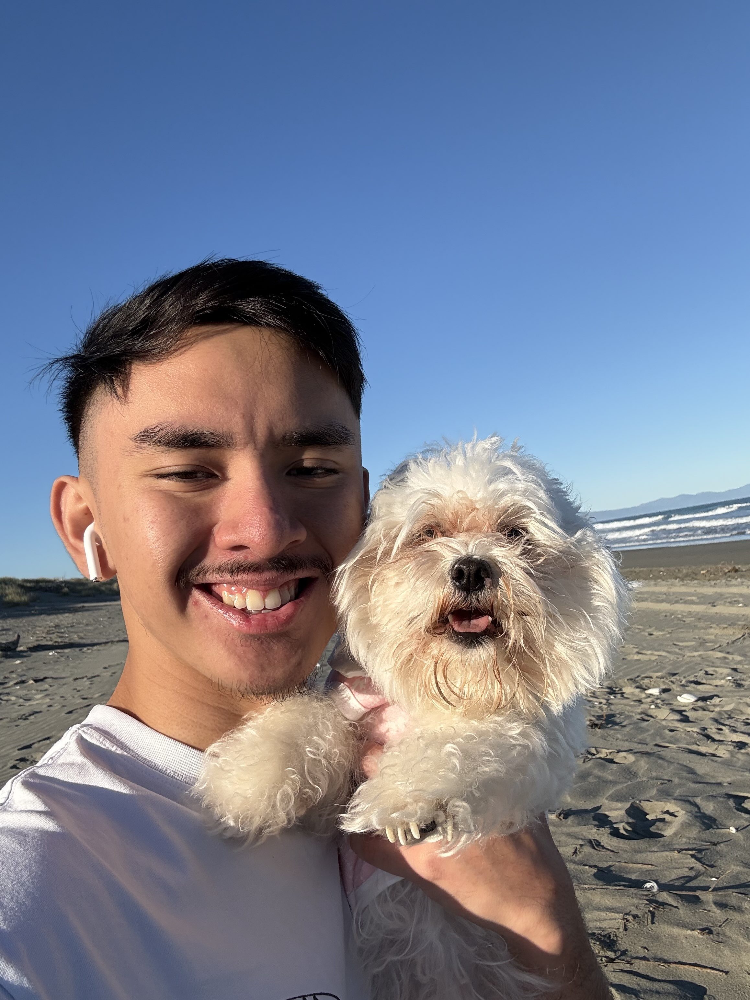

Ahmick Montana
Web DeveloperAbout Me
Hi, I'm Ahmick. I'm a web developer who is currently studying Computer Science at the University of Canterbury.
Learn More About Me!Programming Skills
Here are my skills that I can bring onto the table!
Projects
Here are my projects that I have worked on, working on, and planning to work on!
No self projects planned on yet!